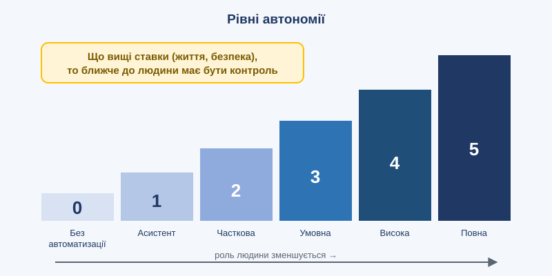

Тема 5. ШІ-агенти та автономні системи

План заняття: цілі, навчальні питання, розподіл часу
Вид заняття: лекція з груповою вправою.
Час: 2 години (90 хв).
Місце: навчальний клас.
Навчальні цілі:
- Сформувати розуміння відмінності агента від чат-бота та будови агента.
- Ознайомити з рівнями автономії та моделями людського контролю.
- Навчити визначати доцільний рівень автономії залежно від ставок задачі.
Навчальні питання:
- Анатомія ШІ-агента. Мультиагентні системи.
- Рівні автономії. Human-in/on/out-of-the-loop.
- Фізичні автономні системи та ризики агентів.
Матеріальне забезпечення: проектор, фліпчарт, маркери, бланки групової вправи.
Розподіл часу:
| Етап | Зміст | Час |
|---|---|---|
| Вступна частина | Тема, цілі. Питання: «Що з функцій вашого дрона вже автономне?» | 10 хв |
| Навчальне питання 1 | Цикл агента, компоненти, мультиагентні системи | 20 хв |
| Навчальне питання 2 | Рівні автономії, моделі контролю | 15 хв |
| Навчальне питання 3 | Групова вправа «Хто вирішує?» | 35 хв |
| Заключна частина | Презентації груп, висновки | 10 хв |
Методичні вказівки викладачу: проведіть аналогію між функціями БПЛА (утримання позиції, повернення додому, супровід цілі) та рівнями автономії. Підкресліть принцип: незворотні та критичні рішення лишаються за людиною.
Навчальний матеріал
5.1. Від чат-бота до агента
Чат-бот відповідає. Агент діє.
ШІ-агент — це система, яка отримує мету, сама планує кроки, використовує інструменти (пошук, код, бази даних, програми), спостерігає за результатами й коригує план, доки не досягне мети.
Приклад. Завдання: «Підготуй звіт про витрати підрозділу на ремонт дронів за квартал».
Агент:
- знаходить потрібні таблиці;
- пише й запускає код для аналізу;
- помічає дублікати записів і виправляє їх;
- будує графіки;
- формує документ і надсилає його на перевірку людині.
5.2. Анатомія агента
| Компонент | Функція |
|---|---|
| Модель (мозок) | Розуміння, міркування, планування |
| Інструменти | Дії у світі: API, браузер, код, файли, датчики |
| Пам'ять | Короткострокова (контекст задачі) і довгострокова (знання, досвід) |
| Планування | Розбиття мети на підзадачі |
| Рефлексія | Перевірка власних результатів, виправлення помилок |
| Обмеження | Дозволи, бюджет, правила безпеки |
Базовий цикл агента такий: спостерігай → міркуй → дій → оцінюй → повторюй.
5.3. Мультиагентні системи
Складні задачі можна розподілити між кількома агентами з різними ролями:
- оркестратор розподіляє роботу;
- дослідник збирає інформацію;
- аналітик опрацьовує дані;
- критик шукає помилки;
- виконавець реалізує рішення.
Така «команда» часто працює надійніше за одного агента, бо ролі перевіряють одна одну. Проте зростають вартість, складність координації та ризик того, що помилки накопичуватимуться.
5.4. Рівні автономії

За аналогією з автономними автомобілями корисно розрізняти рівні:
| Рівень | Опис | Роль людини |
|---|---|---|
| 0 | Без автоматизації | Робить усе |
| 1 | Асистент | Приймає підказки |
| 2 | Часткова автономія | Схвалює кожну дію |
| 3 | Умовна автономія | Втручається за потреби |
| 4 | Висока автономія | Задає мету, контролює вибірково |
| 5 | Повна автономія | Не залучена |
Ключові концепції контролю:
- human-in-the-loop: людина схвалює кожне критичне рішення;
- human-on-the-loop: людина спостерігає і може втрутитися;
- human-out-of-the-loop: система діє самостійно.
Що вищі ставки (життя, безпека, гроші), то ближче до людини має бути контроль.
5.5. Фізичні автономні системи
Автономність стосується не лише програм:
- безпілотні літальні апарати з автоматичним утриманням позиції, поверненням додому, огинанням перешкод, супроводом цілі;
- наземні роботи для логістики, розмінування, евакуації;
- автономні транспортні засоби;
- промислові роботи, що навчаються новим операціям.
Для фізичних систем важливі: робота в реальному часі, стійкість до втрати зв'язку, обробка даних на борту (edge AI) і безпека при відмовах.
5.6. Ризики агентів
- Помилки накопичуються: одна хибна дія на початку тягне за собою ланцюг.
- Надмірні повноваження: агент із доступом до всього може завдати шкоди.
- Ін'єкції підказок (prompt injection): зловмисні інструкції, приховані в документі чи вебсторінці, можуть «перехопити» агента.
- Невідповідність цілей: агент буквально виконує задачу, але не так, як мала на увазі людина.
Принципи безпечного використання:
- мінімально необхідні дозволи;
- підтвердження людиною незворотних дій;
- журналювання всіх дій;
- тестування в ізольованому середовищі.
Висновки
- Агент поєднує мовну модель, інструменти, пам'ять і планування для досягнення мети.
- Рівень автономії слід обирати залежно від ставок.
- Безпека агентів спирається на обмеження повноважень і контроль людини.
Запитання для роздумів
- Яку рутинну задачу у вашій роботі можна доручити агенту? Які дії мають лишитися за людиною?
- Чим небезпечна ін'єкція підказок для агента, який читає пошту?
Практичне завдання
Групова вправа «Хто вирішує?» (у групах по 4–5 осіб, 35 хв).
Розгляньте умовну місію розвідувального БПЛА: зліт → політ до району → пошук об'єктів → виявлення → класифікація → передача даних → повернення → посадка.
- Для кожного етапу визначте рекомендований рівень автономії (0–5) та модель контролю (in / on / out-of-the-loop).
- Обґрунтуйте вибір: ціна помилки, швидкість реакції, стійкість до втрати зв'язку.
- Визначте, що має робити система при втраті зв'язку на кожному етапі.
- Представте результати (3 хв на групу).
Критерії оцінювання (2 бали): обґрунтованість рівнів автономії (1 бал), продуманість дій при втраті зв'язку (1 бал).
Тест для самоконтролю
Обери відповідь у кожному запитанні й натисни «Перевірити відповіді».